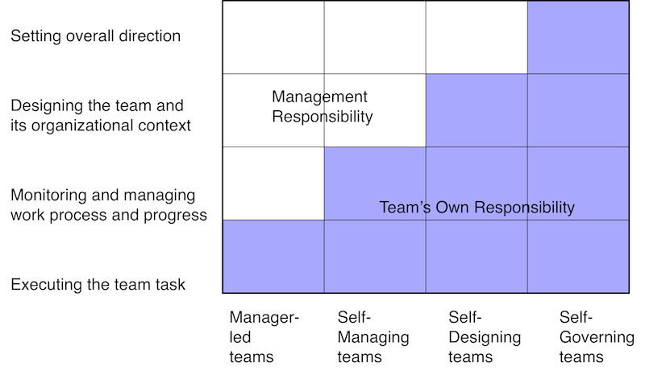

A cross-functional team is a group of people with different functional expertise working toward a common goal. Team members must have all of the skills necessary to create an increment of work.
Direction and Specialization
Understanding of direction is essential for this type of teams
The specialization will allow growing expertise in a particular field
Size of the team:
Product owner
Works with the stakeholders(or users) to get the right requirements, right in the senses
Creates a vision so that the development team visualize the expected outcome by the user
Establishes priorities for the team
Self-Managing team:

Why persistent team is important?
Cross-functional teams and Microservices
Organizations which design systems are constrained to produce designs which are copies of the communication structures of these organizations.